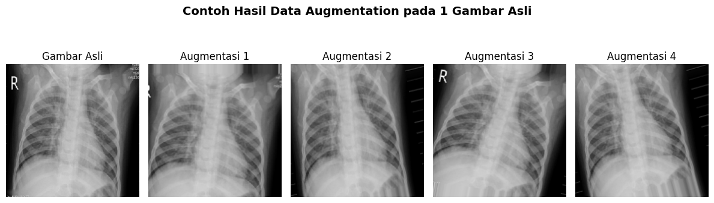

Dataset X-Ray Paru-paru
Menggunakan basis data COVID-19 Radiography Database yang telah memenangkan penghargaan dari Kaggle, berisi ribuan citra yang dikurasi secara medis untuk melatih algoritma Deep Learning.
1 Seleksi Kelas Penyakit
Untuk menjaga kemurnian data dan fokus diagnosis, kami melakukan penyaringan ketat terhadap kategori yang tersedia dalam dataset asli.
🎯 3 Kelas Utama
- Normal
- COVID-19
- Viral Pneumonia
❌ Eksklusi Lung Opacity
Kategori ini dihapus karena merupakan temuan klinis yang ambigu (kekeruhan paru) dan dapat beririsan secara visual dengan ketiga kelas lainnya.
💡 Alasan Klinis
Langkah ini memastikan model CNN belajar membedakan fitur patologis yang unik dan tajam, bukan pola visual yang tumpang tindih.
Visualisasi Citra Chest X-Ray per Kelas

2 Prapemrosesan & Augmentasi
Semua citra diproses ulang menjadi format seragam 224x224 piksel. Kami menerapkan teknik augmentasi dinamis untuk memperkaya variasi data latihan.

🔄 Rotasi & Zoom Dinamis
Mensimulasikan berbagai sudut kemiringan pasien dan variasi jarak saat pengambilan sinar-X.
↔️ Pergeseran Piksel (Shifting)
Mencegah model hanya bergantung pada posisi objek yang berada tepat di tengah frame.